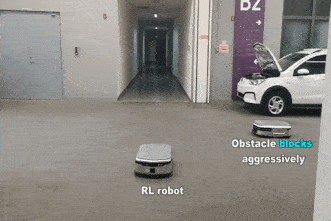
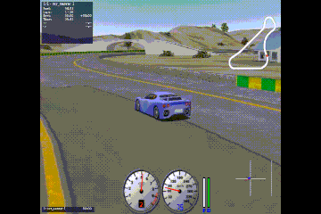
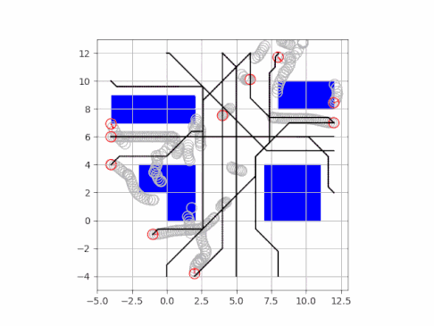

Master's degree in Mechanical Engineering
Tsinghua University
Bachelor's degree in Vehicle Engineering
Tsinghua University
Contact:
Emails: pby19@tsinghua.org.cn
Phone: +86 18810507500
Safe Reinforcement Learning
Reinforcement Learning (RL) has shown exceptional successes in a variety of domains like Go, video Games and robotics, but its application in real world is still limited due to lack of safety guarantee. I am interested in developing safe RL algorithms with explicit safety constraints, promoting the RL in the real world rather than only simulators and games.

Obstacle-avoidance via safe RL. See full video here.
Autonomous Driving
Autonomous driving vehicles are expected to have a huge positive impact on the automotive industry. I am especially interested in applying the RL algorithms in decision-making and control of the autonomous vehicles and mobile robot.

End-to-end autonomous driving via RL. See full video here.
Multi-Robot Distributed Planning and Control
The use of autonomous mobile robots is capable of replacing human labor for demanding, repetitive tasks. The key challenge is the control of multiple robots interreacting with each other. I am interested in applying the RL and model predictive control method to enable multi-robot distributed planning and control.

Multi-robot control via distributed MPC. See full video here.